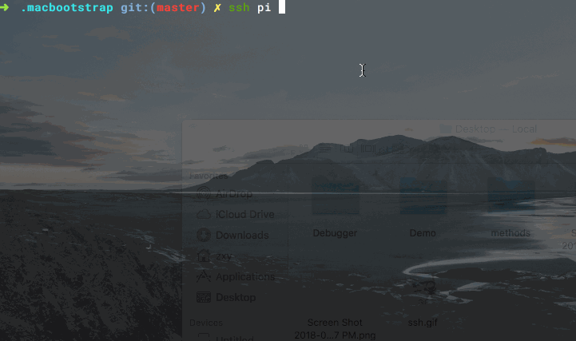

SSH 的配置与管理
SSH 是 Secure Shell 的缩写，其实就是远程 Shell 登陆。只要能远程登录到某台机器的 Shell 上，大到 Mac 笔记本，小到树莓派和智能路由器，我们就可以上传或下载文件、执行脚本等等，几乎掌握了设备的控制权。
一般来说，如果想配置自己的云服务器或者树莓派，都需要通过 SSH 登陆。登陆时一般需要指定地址和用户名，比如我们想登陆 IP 地址为 1.2.3.4 的主机上的 root 用户，需要这样写：
ssh root@1.2.3.4
默认的 SSH 协议端口号是 22，所以无需填写，但有些设备为了安全起见，会更改 SSH 的端口号，比如改成 54321，我们就需要这样写：
ssh -p 54321 root@1.2.3.4
接下来写上 root 账户的密码就可以登录了。
免密登陆
记忆密码是一件很麻烦的事，好在 SSH 支持利用 RSA 的公钥和私钥体系来验证身份。执行以下命令：
brew install ssh-copy-id
ssh-copy-id root@1.2.3.4
# 等价于下面这个命令，省掉了两个默认参数
# ssh-copy-id -i ~/.ssh/id_rsa.pub root@100.100.100.100 -p 22
这里我们利用了 ssh-copy-id 这个工具，它的原理其实是把自己的公钥（默认使用 ~/.ssh/id_rsa.pub 这个文件中的内容）复制到目标服务器的 ~/.ssh/authorized_keys 文件内。所以完全可以手动完成，不过用工具来实现的话，速度快，而且可以自动设置文件权限。
别名
即使配置了免密登陆，但用户名、IP 地址和端口号还是不想记忆，此时可以利用 SSH 的配置文件来实现。
编辑 ~/.ssh/config 文件，添加以下内容：
Host testhost
HostName 1.2.3.4
User root
Port 54321
IdentityFile ~/.ssh/id_rsa
这个配置文件还是很容易理解的，我们给地址为 1.2.3.4，端口为 54321，用户名为 root 的远程主机起了一个别名，然后就可以这样连接了：
ssh testhost
再也不用担心自己记不住那么多远程主机了，更神奇的是，iTerm2 还支持自动补全：

全局 SSH 配置
ssh 还可以添加一些全局配置，让它变得更好用，我的配置如下：
Host *
ForwardAgent yes
ServerAliveInterval 10
ServerAliveCountMax 10000
TCPKeepAlive no
ControlMaster auto
ControlPath ~/.ssh/%h-%p-%r
ControlPersist 4h
Compression yes
逐个解释下：
- ForwardAgent：假设我通过 SSH 连接上了服务器 A（通常在公司内部有跳板机时格外有用），又从服务器 A 连接到服务器 B，如果将
ForwardAgent配置为YES，在两台服务器之间传输数据就不会经过本机。 - ServerAliveInterval 和 ServerAliveCountMax：表示客户端定期向服务端发送心跳包，使得服务端不会断开 SSH 的连接。这里表示 10 秒发一次，发 1W 次。
- Control***：每次建立远程连接，在
~/.ssh目录下都会建立一个 socket 文件。这三个配置连用，表示缓存 socket 文件，并保留 4 小时，这样可以加快下次连接的速度。